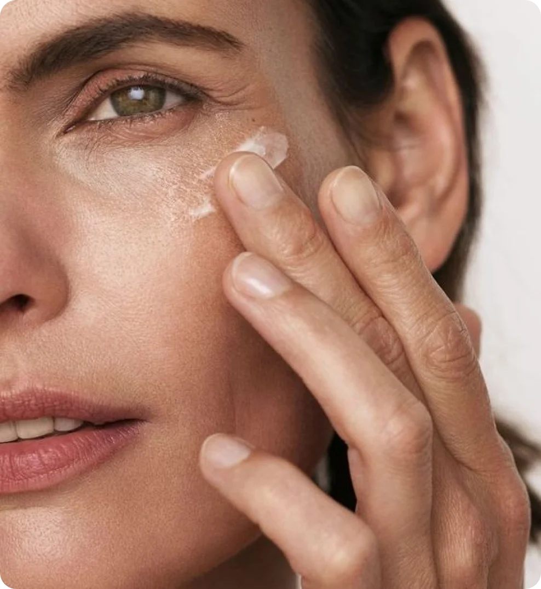

17 марта 2024
уход
советы
возраст
Примерно в возрасте 35-40 лет на коже проявляются первые признаки старения, такие как пигментные пятна, мимические морщины и снижение эластичности кожи. Однако старение кожи можно замедлить, если подобрать правильный уход и соблюдать несколько правил. Сегодня обсудим, как ухаживать за возрастной кожей.
Система ухода
Очищение и увлажнение кожи
Возрастная кожа склонна к повышенной сухости и чувствительности, поэтому очищение и увлажнение играют важную роль в уходе. Очищающие средства должны быть деликатными и нежными, выбирайте формулы без спиртов в составе, чтобы избежать раздражения кожи. Хорошо будет использовать для очищения гидрофильное масло.
Для увлажнения используйте тонеры с растительными экстрактами, а также кремы или сыворотки, содержащие гиалуроновую кислоту, витамин Е, и другие компоненты, которые помогут удерживать влагу в коже. Уделите особое внимание увлажнению области вокруг глаз, так как эта зона особенно чувствительна.

Уход за морщинами
Антивозрастная косметика восполняет недостаток влаги и помогает удержать её благодаря содержанию гиалуроновой кислоты. Anti-age средства разработаны специально для борьбы с признаками старения кожи, такими как морщины, потеря упругости, пигментация и другие. В состав таких средств часто входят активные ингредиенты, которые стимулируют регенерацию кожи, увлажняют ее, укрепляют коллагеновые волокна и предотвращают повреждения кожи.
Антивозрастные средства часто бывают доступны в форме кремов, сывороток, масок, патчей для глаз, а также в составе специальных процедур в салонах красоты. Коллаген и эластин, присутствующие в составе, помогут сохранить упругость кожи. Центелла азиатская, факторы роста, пептиды, янтарная и молочная кислоты способствуют восстановлению кровообращения, которое так необходимо для нормального питания тканей, снижают отечность, а также активируют синтез собственного коллагена.